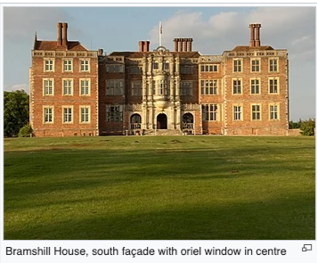

Bramshill House
From Wikipedia,the free Encyclopedia

Bramshill House, in Bramshill, northeast Hampshire, England, is one of the largest and most important Jacobean prodigy house mansions in England. It was built in the early 17th century by Baron Edward la Zouche of Harringworth but was partly destroyed by fire a few years later.
The design shows the influence of the Italian Renaissance, which became popular in England during the late 16th century. The house was designated a Grade I listed building in 1952.
The mansion's southern façade is notable for its decorative architecture, which includes at its centre a large oriel window above the principal entrance. Interior features include a great hall displaying 92 coats of arms on a Jacobean screen, an ornate drawing room, and a 126.5-foot-long (38.6 m) gallery. Numerous columns and friezes are found throughout the mansion, while several rooms have large tapestries depicting historical figures and events on their panelled walls.
The house is set in 262 acres (106 ha) of grounds containing an 18-acre (7.3 ha) lake. The grounds, which received a Grade II* listing in 1984, are part of a Registered Historic Park that includes about 25 acres (10 ha) of early 17th-century formal gardens near the house.